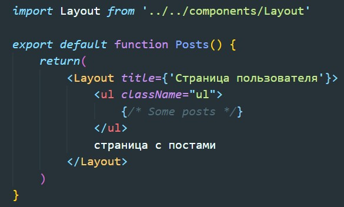
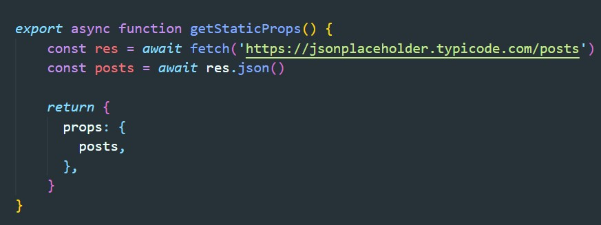
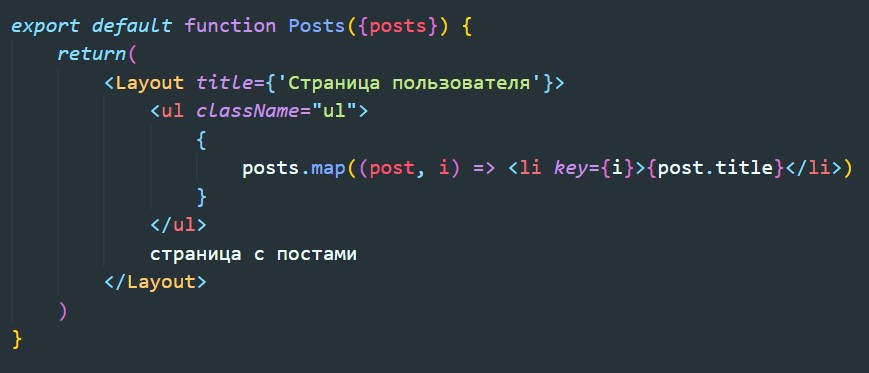

Допустим нам надо перед рендером получить данные из БД.
Чтобы получить эти данные при предварительном рендеринге, Next.js позволяет экспортировать асинхронную функцию getStaticProps из того же файла. Эта функция вызывается во время сборки и позволяет передавать полученные данные в свойства страницы при предварительном рендеринге.
Теперь эти данные доступны через пропсы нашей компоненты
